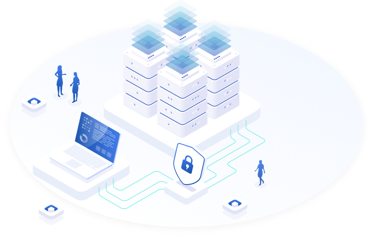
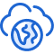
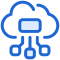
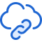
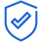
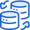

Infra Solution
Backup Solution

Veeam

Veeam Backup & Replication
Veeam 소프트웨어는 물리환경, 가상화 환경, 클라우드 등 모든 환경에서 데이터를 빠르고 유연하게 복구하는 유일한 솔루션으로,
OS, 파일 , DB 백업을 하나의 솔루션으로 해결할 수 있습니다.
서린정보기술은 Veeam의 공식 파트너로서 그룹사 및 고객사의 Backup System 구축 및
운영 노하우를 바탕으로 Veeam 솔루션을 통한 안정된 인프라 환경을 제공합니다.
주요 장점

물리환경 (Agent 윈도우/리눅스)
- OS 백업과 DB 백업을 하나의 솔루션으로 해결
- 장애발생 시 백업본을 가상화하여 즉시 서비스 재개
- P2V, P2C 등 가상환경으로 수작업이 필요없는 마이그레이션 기술 제공

클라우드 (VMware, Nutanix, AHV, Hyper-V)
- 관리포인트와 장애 리스크를 대폭 절감시켜주는 Agentless 기술 제공
- VM 장애발생 시 백업본을 가상화하여 즉시 서비스 재개
- V2P, V2C 등 수작업이 필요없는 마이그레이션 기술 제공

퍼블릭 클라우드 (KVM, AWS, Azure, Openstack ...)
- 에이전트 기반 VM, DB 단위 복구
- P2V, P2C, V2P, V2C 마이그레이션 기술 제공
- S3 호환 오브젝트 스토리지와 연동가능
Veritas
Veritas NetBackup
데이터 관리, 자동화, 인공 지능, Zero Trust 아키텍처를 결합하여 통합 하이브리드 클라우드 전반에서
엔터프라이즈 수준의 데이터를 보호하는 백업 및 복구 솔루션 입니다.
주요 장점

Zero Trust 아키텍쳐
인증된 사용자만 데이터에 액세스할 수 있도록 하는 Zero Trust 아키텍처를 통해 데이터 보호를 위한 안전한 환경을 제공합니다.
변조 및 악의적 삭제 방지
변조 및 악의적 삭제에 대한 보호 기능을 제공하여 데이터를 항상 복구할 수 있도록 보장합니다.
표준 규정 준수
SEC-17a 및 FINRA와 같은 규정을 준수하도록 설계되어 업계 표준에 따라 데이터를 보호합니다.

대규모 복구
재해 발생 시 대규모 복구를 위해 설계되어 데이터를 신속하고 쉽게 복구할 수 있습니다.
서린정보기술은 다양한 분야의 고객들에게
견고한 Backup System과 안정된 인프라 환경을 제공한
경험과 노하우를 지니고 있습니다.
견고한 Backup System과 안정된 인프라 환경을 제공한
경험과 노하우를 지니고 있습니다.